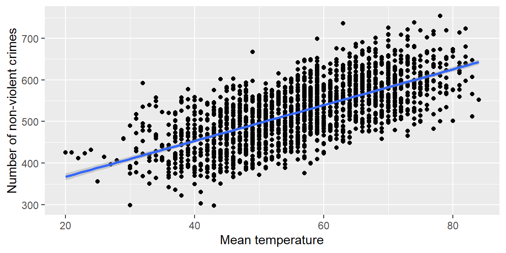
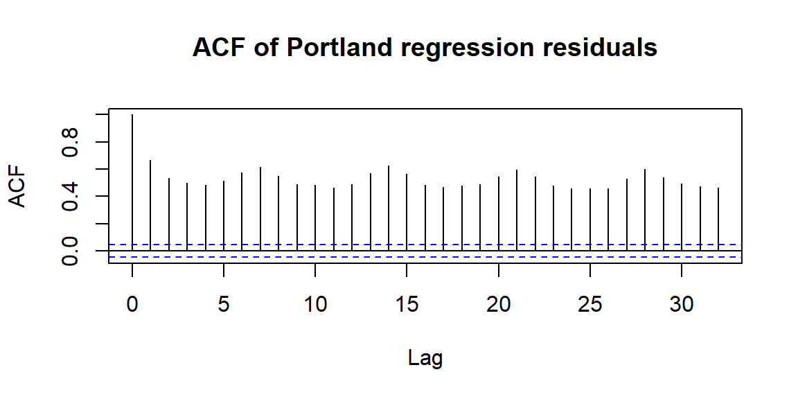
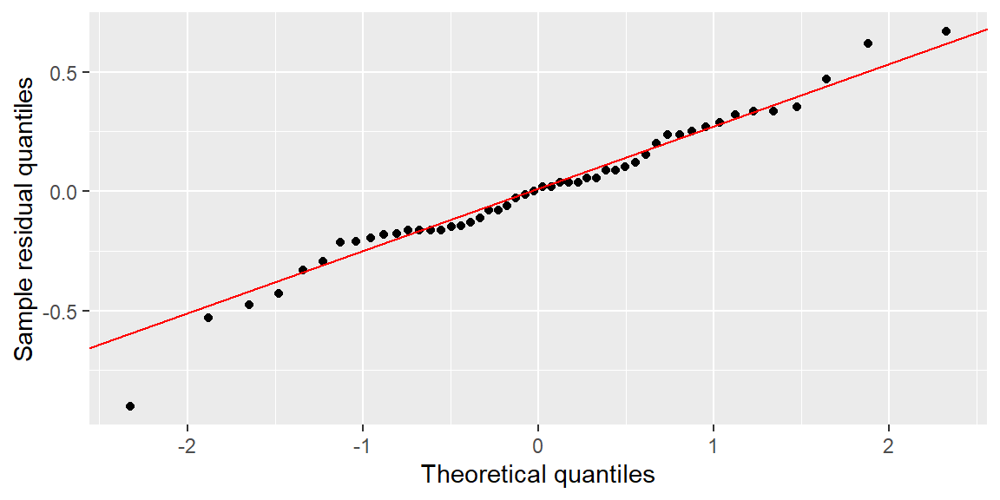

8Checking the Normality and Independence Assumptions and Outliers
“If it’s green or wriggles, it’s biology. If it stinks, it’s chemistry. If it doesn’t work, it’s physics or engineering. If it’s green and wiggles and stinks and still doesn’t work, it’s psychology. If it’s incomprehensible, it’s mathematics. If it puts you to sleep, it’s statistics.” - Anonymous, Journal of the South African Institute of Mining and Metallurgy (1978)
In the previous chapter, we focused on checking linearity and constant variance. In this chapter, we continue the diagnostic process by examining:
outliers,
correlated errors, and
normality of the errors.
As before, the goal is not to find perfect assumptions. The goal is to decide whether the assumptions are reasonable enough for the regression analysis to be useful.
8.1 Checking for Outliers
8.1.1 Outliers with Respect to the Predictor and Response
When checking for outliers in regression, we must think in two dimensions because we have both a predictor variable \(x\) and a response variable \(y\).
An observation can be unusual because:
its response value is far from the fitted line,
its predictor value is far from the rest of the observed \(x\) values, or
both.
Since regression models the response variable \(y\), we are often especially concerned with observations that have unusual residuals. However, an observation with an unusual \(x\) value can also be important because it may strongly affect the fitted line.
NoteOutlier, leverage, and influence
These three ideas are related but not identical.
Term
Meaning
Outlier in \(y\)
An observation with a response far from what the model predicts.
High leverage point
An observation with an unusual predictor value.
Influential point
An observation that noticeably changes the fitted regression line.
A point can be high leverage without being influential. A point can also have a large residual without greatly changing the fitted line. Later, especially in multiple regression, we will use more formal tools for leverage and influence.
ExampleComparing an outlier, a high leverage point, and an influential point
The plots below show three different kinds of unusual observations. The highlighted point plays a different role in each panel.
library(tidyverse)set.seed(808)base_points<-tibble( x =runif(35, 0, 10), y =2+1.4*x+rnorm(35, sd =1))case_points<-tibble( pattern =c("Outlier in y\nlarge residual, ordinary x","High leverage\nunusual x, follows pattern","Influential\nunusual x and changes line"), x =c(5, 15, 15), y =c(19, 23, 5))base_by_pattern<-bind_rows(lapply(case_points$pattern, \(this_pattern){base_points|>mutate( pattern =this_pattern, point_type ="Original data")}))diagnostic_cases<-case_points|>mutate(point_type ="Highlighted point")diagnostic_comparison<-bind_rows(base_by_pattern, diagnostic_cases)ggplot(diagnostic_comparison, aes(x =x, y =y))+geom_smooth(method ="lm", formula =y~x, se =FALSE, color ="steelblue")+geom_point(aes(color =point_type), size =2)+facet_wrap(~pattern, nrow =1)+scale_color_manual(values =c("Highlighted point"="red", "Original data"="gray35"))+labs(x ="x", y ="y", color =NULL)
The first highlighted point is unusual mainly because it is far above the fitted line. The second is far out in the \(x\) direction but follows the same pattern as the rest of the data. The third is far out in \(x\) and pulls the fitted line toward itself, making it influential.
NotePreview: Cook’s distance
Cook’s distance is a diagnostic measure that combines residual size and leverage. It is designed to flag observations that may have a large influence on the fitted regression model.
A common rough guideline is to investigate observations with Cook’s distance larger than \(4/n\), where \(n\) is the sample size. This is not an automatic deletion rule. It is a prompt to ask whether the observation is valid, whether the model is appropriate, and how much the conclusions depend on that point.
We will return to influence diagnostics in more detail later.
8.1.2 Detecting Outliers with Semistudentized Residual Plots
Because outliers in \(y\) are determined mainly by how far a point is from the fitted line, we identify potential outliers by examining residuals. A useful scale is the semistudentized residual: \[\begin{align*}
e_i^*
&=\frac{e_i-\bar e}{\sqrt{MSE}}\\
&=\frac{e_i}{\sqrt{MSE}}.
\end{align*}\]
We can plot \(e_i^*\) against \(x\) or against \(\hat y\).
As a rough rule of thumb, values of \(e_i^*\) below -4 or above 4 should be considered possible outliers. For moderate sample sizes, values beyond about -3 or 3 may also be worth investigating. These are not automatic deletion rules; they are flags for investigation.
Now fit the simple linear regression model and calculate semistudentized residuals.
fit_outlier<-lm(y~x, data =outlier_dat)outlier_diag<-outlier_dat|>mutate( obs =row_number(), yhat =fitted(fit_outlier), e =resid(fit_outlier), e_star =e/sigma(fit_outlier))ggplot(outlier_diag, aes(x =x, y =e_star))+geom_point()+geom_hline(yintercept =0, color ="red")+geom_hline(yintercept =c(-3, 3), color ="orange", linetype ="dashed")+geom_hline(yintercept =c(-4, 4), color ="darkred", linetype ="dotted")+labs(x ="x", y ="Semistudentized residual")
The dashed orange lines mark \(\pm 3\), and the dotted dark red lines mark \(\pm 4\).
The largest semistudentized residual should be investigated. It may be a data-entry error, a genuinely unusual case, or a sign that the model is missing something important.
WarningDo not delete just because a point is unusual
Once we identify a potential outlier, we must investigate why it is unusual.
If the observation is unusual because of a clear data recording error, the value may be corrected or removed. If we cannot determine that the point is erroneous, we should not delete it simply because it is inconvenient. Real data often contain real unusual observations.
8.2 Correlated Error Terms
8.2.1 Assumption of Independence
The regression model assumes that the errors associated with different observations are independent. If errors are correlated, then the model may underestimate or overestimate uncertainty, making confidence intervals and hypothesis tests unreliable.
When the errors are normally distributed, uncorrelated errors imply independent errors. Since true errors are not observed, we examine residuals for evidence of dependence.
8.2.2 Residual Sequence Plots
The usual cause of correlated residuals is data collected in some sequence, such as time or space. When errors are correlated over time or another sequence, we say they are serially correlated or autocorrelated.
When data are collected in a meaningful order, a residual sequence plot can show evidence of autocorrelation. In a sequence plot, residuals are plotted against the observation index \(i\).
If there is no autocorrelation, the residuals should be randomly scattered around 0. If there is a pattern, such as long runs above or below 0, then there is evidence of autocorrelation.
ExampleWhat autocorrelation can look like
Suppose a residual sequence plot shows 20 residuals below 0 followed by 20 residuals above 0.
That pattern suggests the errors are not independent. Consecutive observations are behaving similarly, so the effective amount of information in the data may be less than the sample size suggests.
Autocorrelation is especially common with time-ordered data, such as daily measurements, monthly sales, annual economic indicators, or repeated measurements from nearby locations.
8.2.3 Autocorrelation Function Plot
Sometimes a residual sequence plot may not show an obvious pattern, even though autocorrelation exists.
Another useful plot is the autocorrelation function plot, or ACF plot.
In the ACF plot, correlations are calculated between residuals that are \(k\) indices apart: \[
\begin{align}
r_k
&=\widehat{Cor}(e_i,e_{i+k})\\
&=\frac{\sum_{i=1}^{n-k}(e_i-\bar e)(e_{i+k}-\bar e)}{\sum_{i=1}^n(e_i-\bar e)^2}.
\end{align}
\tag{8.1}\]
In an ACF plot, \(r_k\) is plotted for varying values of \(k\). If the value of \(r_k\) is larger in magnitude than the threshold shown on the plot, usually based on an approximate 95% interval, then this is evidence of autocorrelation.
8.2.4 Tests for Autocorrelation
In addition to sequence plots and ACF plots, formal tests can be conducted for significant autocorrelation. In each of these tests, the null hypothesis is that there is no autocorrelation.
8.2.5 Durbin-Watson Test
The Durbin-Watson test is for autocorrelation at lag 1 in Equation 8.1. That is, it tests for correlation one index, or one time point, apart.
The Durbin-Watson test can be conducted in R with the dwtest() function in the lmtest package.
8.2.6 Ljung-Box Test
The Ljung-Box test differs from the Durbin-Watson test because it tests for overall autocorrelation over all lags up to some value \(k\). For example, if \(k=4\), then the Ljung-Box test looks for significant autocorrelation over lags 1 through 4.
The Ljung-Box test can be conducted in R with the base R function Box.test() using type = "Ljung-Box".
8.2.7 Breusch-Godfrey Test
The Breusch-Godfrey test is similar to the Ljung-Box test because it can test for autocorrelation over several lags. When using time series regression models, the Breusch-Godfrey test is often preferred.
The Breusch-Godfrey test can be conducted in R with the bgtest() function in the lmtest package.
Example 8.2
ExamplePortland crime data and autocorrelation
Let’s look at data collected on the mean temperature for each day in Portland, Oregon, and the number of non-violent crimes reported that day. The crime data were part of a public database gathered from www.portlandoregon.gov.
The data are ordered by day. The variable day is the day index number.
library(tidyverse)portland<-read_csv("PortlandWeatherCrime.csv", show_col_types =FALSE)names(portland)[1]<-"day"ggplot(portland, aes(x =Mean_Temp, y =Num_Total_Crimes))+geom_point()+geom_smooth(method ="lm", formula =y~x)+labs(x ="Mean temperature", y ="Number of non-violent crimes")

fit_portland<-lm(Num_Total_Crimes~Mean_Temp, data =portland)summary(fit_portland)
Call:
lm(formula = Num_Total_Crimes ~ Mean_Temp, data = portland)
Residuals:
Min 1Q Median 3Q Max
-168.198 -41.055 0.149 40.455 183.680
Coefficients:
Estimate Std. Error t value Pr(>|t|)
(Intercept) 281.0344 6.4456 43.60 <2e-16 ***
Mean_Temp 4.3061 0.1116 38.59 <2e-16 ***
---
Signif. codes: 0 '***' 0.001 '**' 0.01 '*' 0.05 '.' 0.1 ' ' 1
Residual standard error: 55.69 on 1765 degrees of freedom
Multiple R-squared: 0.4576, Adjusted R-squared: 0.4573
F-statistic: 1489 on 1 and 1765 DF, p-value: < 2.2e-16
The residuals show long runs below and above 0, which suggests autocorrelation.
acf(portland_diag$res, main ="ACF of Portland regression residuals")

The ACF plot gives another view of residual correlation across lags.
For the Ljung-Box and Breusch-Godfrey tests below, we test up to lag 7 because the data were collected daily. In a daily dataset, a 7-day lag may be meaningful because the same day of the week could have similar behavior.
if(requireNamespace("lmtest", quietly =TRUE)){lmtest::dwtest(fit_portland)}else{"Install the lmtest package to run lmtest::dwtest()."}
Durbin-Watson test
data: fit_portland
DW = 0.66764, p-value < 2.2e-16
alternative hypothesis: true autocorrelation is greater than 0
Box.test(portland_diag$res, lag =7, type ="Ljung-Box")
if(requireNamespace("lmtest", quietly =TRUE)){lmtest::bgtest(fit_portland, order =7)}else{"Install the lmtest package to run lmtest::bgtest()."}
Breusch-Godfrey test for serial correlation of order up to 7
data: fit_portland
LM test = 977.84, df = 7, p-value < 2.2e-16
Small p-values provide evidence of autocorrelation. If the independence assumption is violated, then ordinary regression standard errors, confidence intervals, and tests may be misleading.
When independence is violated, one possible remedy is to model changes instead of levels. For example, a difference in the response values can be defined as \[
y_i' = y_i-y_{i-k},
\] where \(k\) is a lag where autocorrelation is important.
This kind of differencing may help remove autocorrelation, but it also changes the interpretation of the model. If differencing does not solve the problem, a time series model may be necessary.
NoteDependence changes the information in the data
When observations are positively autocorrelated, nearby observations tend to carry overlapping information.
This means 100 time-ordered observations may contain less independent information than 100 randomly sampled observations. That is why independence matters for standard errors and hypothesis tests.
8.3 Normality of the Residuals
8.3.1 The Normality Assumption
The normality assumption says the error terms are normally distributed at each value of \(x\).
Normality is especially important for exact small-sample \(t\) tests and \(t\) intervals for \(\beta_0\) and \(\beta_1\). It is also important for confidence intervals for the mean response and prediction intervals for individual responses.
We check normality by examining the residuals from the fitted line.
NoteNormal errors, not necessarily normal response values
The normality assumption is about the errors around the regression line, not necessarily about the raw response variable \(y\).
The response variable can have a nonnormal marginal distribution even when the errors around the mean response are approximately normal.
8.3.2 Graphically Checking Normality
We can graphically check the distribution of the residuals. The two most common displays are:
a histogram of residuals, and
a normal quantile-quantile plot, usually called a normal Q-Q plot.
For a histogram, we check whether the shape is approximately mound-shaped and symmetric.
For a Q-Q plot, we check whether the points approximately follow a straight line. Major departures from a straight line indicate nonnormality.
It is important to note that we will never see an exact normal distribution in real-world data. We look for approximate normality in the residuals.
The inferences discussed previously are still useful for small departures from normality. However, major departures from normality can lead to incorrect p-values and interval coverages.
8.3.3 Examples of Q-Q Plots
Below are examples of histograms and Q-Q plots for simulated datasets.
(a) Normal - Histogram
(b) Normal - QQ plot
(c) Right skewed - Histogram
(d) Right skewed - QQ plot
(e) Heavy right skewed - Histogram
(f) Heavy right skewed - QQ plot
(g) Left skewed - Histogram
(h) Left skewed - QQ plot
(i) Heavy tails - Histogram
(j) Heavy tails - QQ plot
(k) No tails - Histogram
(l) No tails - QQ plot
Figure 8.1: Examples of Q-Q plots
ExampleChecking normality of residuals
We can check the residuals from the earlier outlier example using a histogram and a Q-Q plot.
ggplot(outlier_diag, aes(sample =e))+stat_qq()+stat_qq_line(color ="red")+labs(x ="Theoretical quantiles", y ="Sample residual quantiles")

If the residuals are approximately normal, the Q-Q plot points should roughly follow the red line. Large bends, strong S-shapes, or isolated points far from the line suggest departures from normality.
8.3.4 The Shapiro-Wilk Test
There are many hypothesis tests for normality. One common test is the Shapiro-Wilk test.
In the Shapiro-Wilk test, the null hypothesis is that the data are normally distributed: \[\begin{align*}
H_0 &: \text{the residuals are normally distributed}\\
H_a &: \text{the residuals are not normally distributed}.
\end{align*}\]
This test can be conducted using the shapiro.test() function in base R.
ExampleShapiro-Wilk test for residual normality
For the residuals from the outlier example, we can run:
Shapiro-Wilk normality test
data: resid(fit_outlier)
W = 0.97444, p-value = 0.3474
A small p-value provides evidence against normality. However, as with other diagnostic tests, the result should be interpreted alongside plots.
With small samples, normality tests may have low power. With large samples, they may flag tiny deviations from normality that do not matter much in practice.
WarningPlots and tests answer different questions
A Q-Q plot shows the shape of the departure from normality. A Shapiro-Wilk test gives a p-value.
Use both ideas carefully. A p-value can tell us that something is unusual under normality, but the plot helps us see whether the problem is skewness, heavy tails, outliers, or something else.
8.4 What to Do When Normality or Independence Looks Problematic
Diagnostics are useful because they suggest next steps. The right response depends on the problem.
Diagnostic concern
Possible next step
One or two extreme residuals
Check for data-entry errors, examine context, and consider sensitivity analysis.
Strong skewness in residuals
Consider transforming \(y\), using a model appropriate for skewed responses, or using resampling methods.
Heavy-tailed residuals
Investigate outliers, consider robust methods, and be cautious with small-sample \(t\) inference.
Autocorrelation over time
Add relevant time variables, difference the response, or use a time-series model.
Dependence from clusters or repeated measurements
Consider methods that account for grouping, such as mixed models or clustered standard errors.
No diagnostic remedy should be applied mechanically. A transformation or new model should make sense for the context, not just make a plot look prettier.
8.5 Diagnostic Workflow Checklist
Chapters 07 and 08 together give a basic diagnostic workflow for simple linear regression.
NoteA practical diagnostic sequence
After fitting a simple linear regression model:
Start with the scatterplot. Does a straight-line relationship appear reasonable?
Check residuals versus \(x\) and fitted values. Look for curvature and changing spread.
Check semistudentized residuals. Look for unusually large residuals.
Check leverage and influence. Ask whether unusual \(x\) values are pulling the fitted line.
If data are ordered, check residuals over order. Look for runs, trends, cycles, or autocorrelation.
Check normality of residuals. Use a histogram and Q-Q plot, then possibly a formal test.
Connect diagnostics to the research question. Decide whether any violations are serious enough to change the analysis or qualify the conclusions.
The point of diagnostics is not to punish the model. It is to learn where the model is trustworthy and where it may be fragile.
8.6 Recap
This chapter completed the basic diagnostic toolkit for simple linear regression.
Idea
Meaning
Outlier in \(y\)
An observation with a response value far from the fitted line.
High leverage point
An observation with an unusual predictor value.
Influential point
An observation that noticeably changes the fitted regression line.
Semistudentized residual
A residual divided by \(\sqrt{MSE}\), useful for flagging unusually large residuals.
Autocorrelation
Correlation among errors or residuals across an ordered sequence.
Residual sequence plot
A plot of residuals against observation order, useful for detecting dependence.
ACF plot
A plot of residual correlations at different lags.
Durbin-Watson test
A test for lag-1 autocorrelation.
Ljung-Box test
A test for overall autocorrelation up to a chosen lag.
Normal Q-Q plot
A diagnostic plot for checking whether residuals are approximately normal.
Shapiro-Wilk test
A formal test of normality.
Cook’s distance
A diagnostic measure that combines residual size and leverage to flag potentially influential observations.
Diagnostic workflow
A structured sequence for checking model assumptions and deciding what to investigate next.
8.7 Check your understanding
NoteProblems
Why do we need to think about outliers in both the \(x\) and \(y\) directions?
What is the difference between an outlier, a high leverage point, and an influential point?
Why should a large semistudentized residual be treated as a flag for investigation rather than an automatic reason to delete an observation?
What does a residual sequence plot show that an ordinary residual-versus-\(x\) plot may not show?
What does autocorrelation mean in the context of regression residuals?
Why can autocorrelation make regression standard errors and hypothesis tests unreliable?
What is the difference between the Durbin-Watson test and the Ljung-Box test?
What should residuals look like in a normal Q-Q plot if the normality assumption is reasonable?
Why is it incorrect to say that the response variable \(y\) must be normally distributed for regression inference to be valid?
Why should the Shapiro-Wilk test be interpreted together with a histogram or Q-Q plot?
Why can a high leverage point be harmless in one dataset but influential in another?
What does Cook’s distance try to measure?
If residuals show autocorrelation, what are two possible next steps?
If residuals are strongly skewed, why might transforming \(y\) be considered?
TipSolutions
Regression is two-dimensional. An observation can be unusual because its response is far from the fitted line or because its predictor value is far from the rest of the observed predictor values. Both can matter for the fitted model.
Three different diagnostic roles. An outlier has an unusual response relative to the model. A high leverage point has an unusual predictor value. An influential point noticeably changes the fitted regression line.
Unusual does not mean wrong. A large semistudentized residual may indicate a data-entry error, but it may also be a real unusual observation or evidence that the model is missing something. We investigate before deciding what to do.
Order matters. A residual sequence plot shows residuals in the order the data were collected. It can reveal runs, trends, cycles, or other dependence patterns that may not be visible in a residual-versus-\(x\) plot.
Residuals are related across order. Autocorrelation means residuals close together in time, space, or sequence tend to be related. For example, a positive residual today may make a positive residual tomorrow more likely.
Less independent information than expected. If errors are correlated, then observations do not provide fully independent pieces of information. The usual standard error formulas may be too small or otherwise misleading.
Lag 1 versus multiple lags. The Durbin-Watson test focuses on lag-1 autocorrelation. The Ljung-Box test looks for overall autocorrelation across all lags up to a chosen maximum lag.
Approximately straight. If residuals are approximately normal, the points in the Q-Q plot should fall roughly along a straight line. Large bends, S-shapes, or extreme points suggest nonnormality.
The assumption is about errors. Regression inference assumes the errors around the regression line are normally distributed, not necessarily that the raw response values are normally distributed.
The p-value does not show the shape. The Shapiro-Wilk test gives a p-value, but it does not show whether the problem is skewness, heavy tails, outliers, or something else. The plots provide that diagnostic context.
Leverage alone is not influence. A high leverage point has an unusual predictor value. If it follows the same linear pattern as the rest of the data, it may not change the fitted line much. If it is far from the pattern, it can pull the fitted line strongly and become influential.
Influence on the fitted model. Cook’s distance combines information about residual size and leverage to flag observations that may substantially affect the fitted regression model.
Model the dependence. Possible next steps include adding relevant time-related predictors, differencing the response, or using a time-series model. The right choice depends on why the residuals are autocorrelated.
To make residuals more nearly symmetric. A transformation of \(y\) may reduce skewness or stabilize variation, which can make normal-based inference more reasonable. However, it also changes the interpretation of the model, so it should be used thoughtfully.